Déploiement d'une solution de supervision centralisée Zabbix 7.0 couvrant 50 collèges, 700+ switches et 200+ serveurs — avec automatisation complète via scripts Bash/Python et API REST.
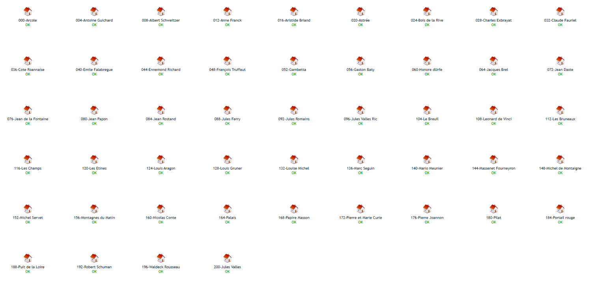
Une vidéo de présentation complète de la solution Zabbix déployée au Département de la Loire.
Le Département de la Loire (CD42) gère 50 collèges publics répartis sur le territoire. Avant ce projet, aucun outil de supervision réseau centralisé n'existait : les pannes étaient détectées uniquement de façon réactive, signalées par les utilisateurs.
L'objectif était de déployer Zabbix 7.0 LTS pour superviser en temps réel l'ensemble du parc réseau et serveurs, avec détection proactive des incidents et alertes automatiques par e-mail.
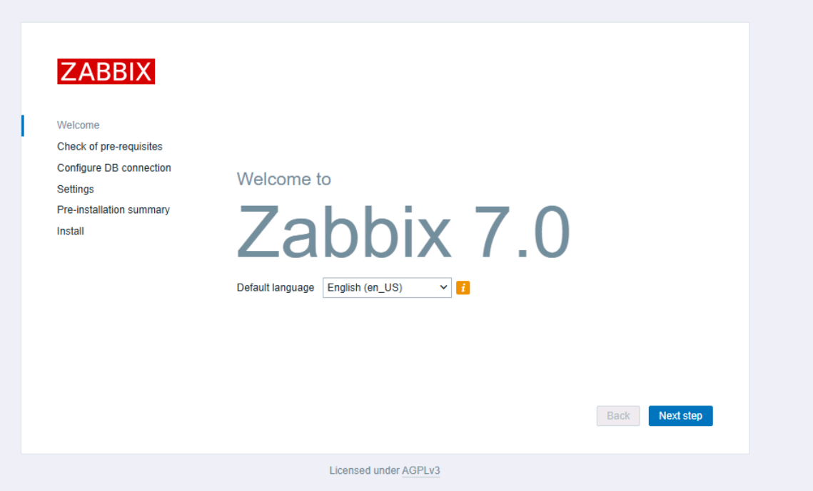
Installation from scratch sur Ubuntu Server 24. Résolution d'un blocage SELinux critique — mauvais contexte sur /etc/snmp/snmpd.conf empêchant le démon SNMP de lire sa configuration.
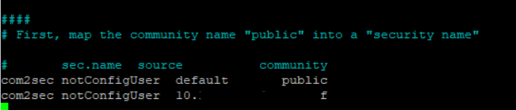
Paramétrage SNMPv2c sur le serveur Zabbix et les équipements Cisco. Configuration des règles UFW pour autoriser le trafic SNMP entrant depuis les sous-réseaux des collèges.
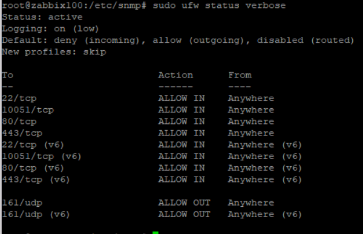
Scripts Bash scannant les 50 sous-réseaux pour identifier automatiquement tous les switches et serveurs. Génération de fichiers de sortie au format id-nomducollege;ip pour import dans Zabbix.
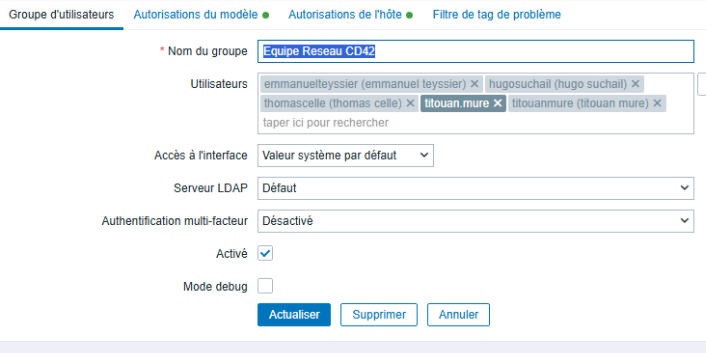
Script zabbix_import.sh créant automatiquement les 900+ hôtes dans Zabbix avec les templates SNMPv2c. Gestion des groupes d'hôtes par collège et par type d'équipement.
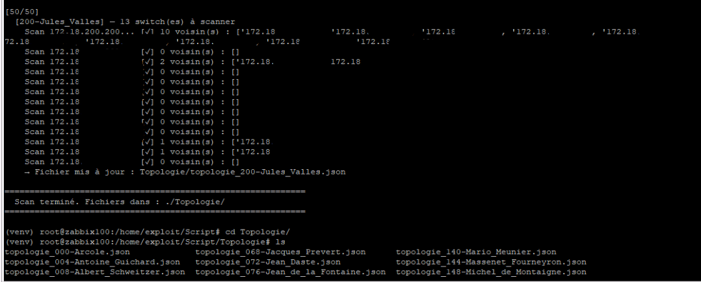
Script Python collectant les topologies via CDP sur chaque switch en SSH. Génération d'un fichier JSON par collège, puis construction automatique des cartes Zabbix avec représentation en cascade des switches.
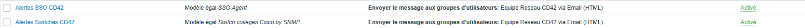
Modèles HTML avec code couleur par sévérité. Purge SQL de 6 967 alertes accumulées dans MariaDB. Ajustement des triggers ICMP pour supprimer le bruit et ne garder que les alertes utiles.
Chaque collège dispose de sa propre carte Zabbix représentant la topologie physique en cascade, depuis le switch cœur jusqu'aux switches d'accès.
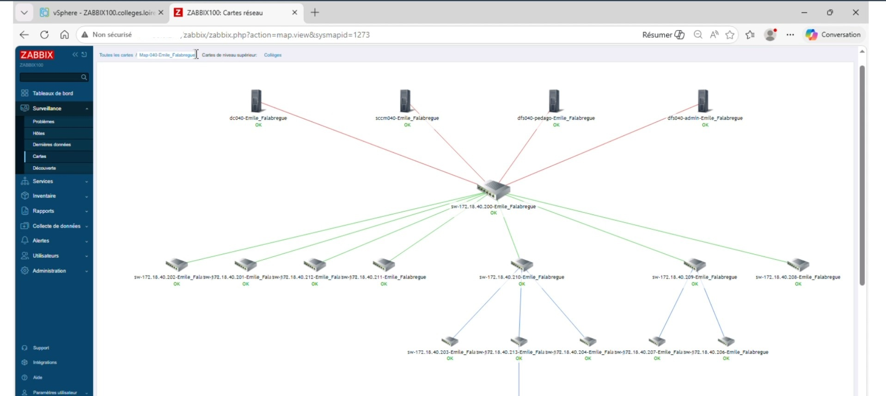
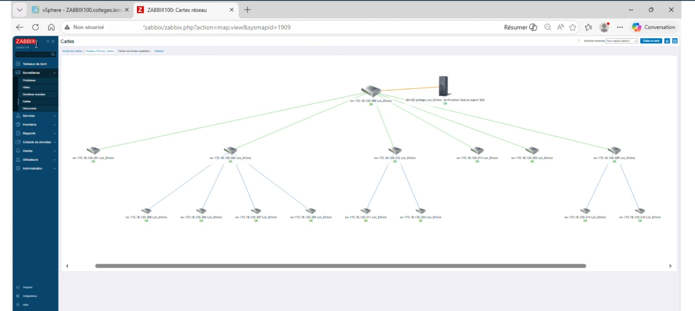
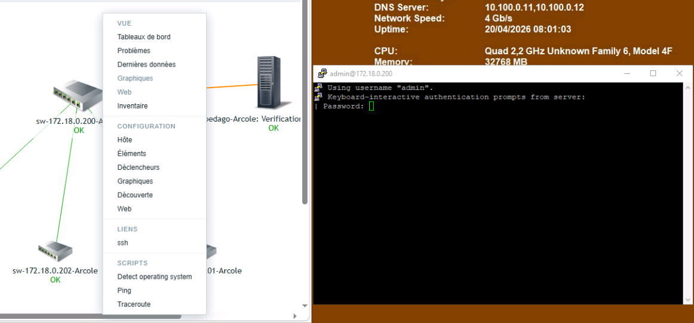
Intégration de PuTTYNG via handler ssh:// dans le registre Windows. Un clic sur un switch dans la carte Zabbix ouvre directement la session SSH — plus besoin de copier-coller les IP.
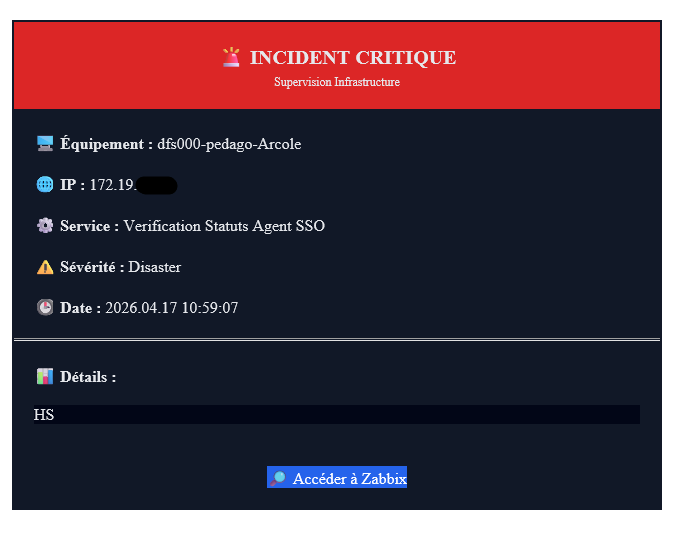
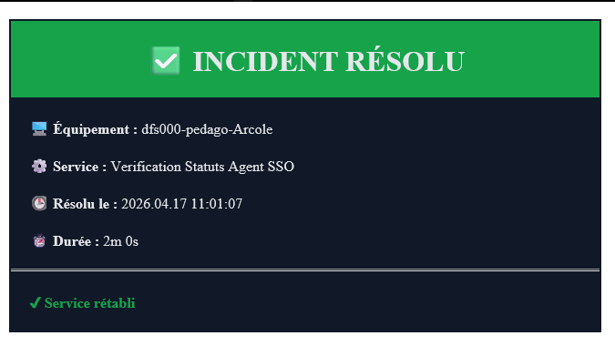
Templates HTML personnalisés avec code couleur par sévérité : rouge pour les incidents, vert pour les résolutions. La DSI est notifiée en temps réel de toute panne réseau dans les collèges.